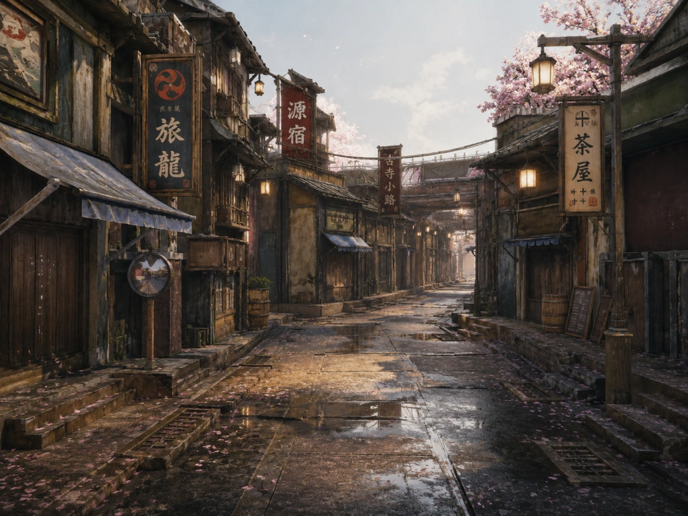
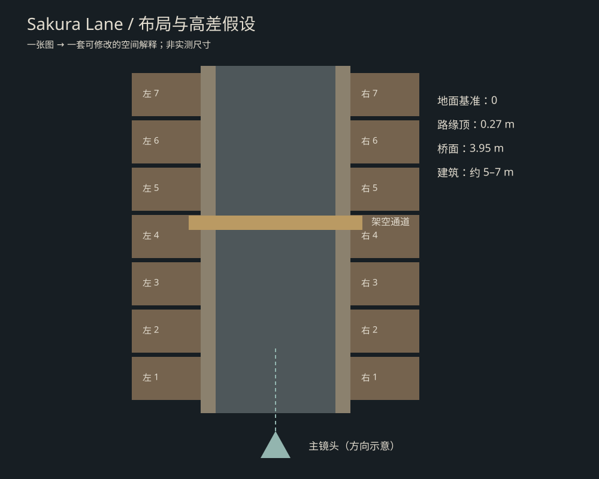
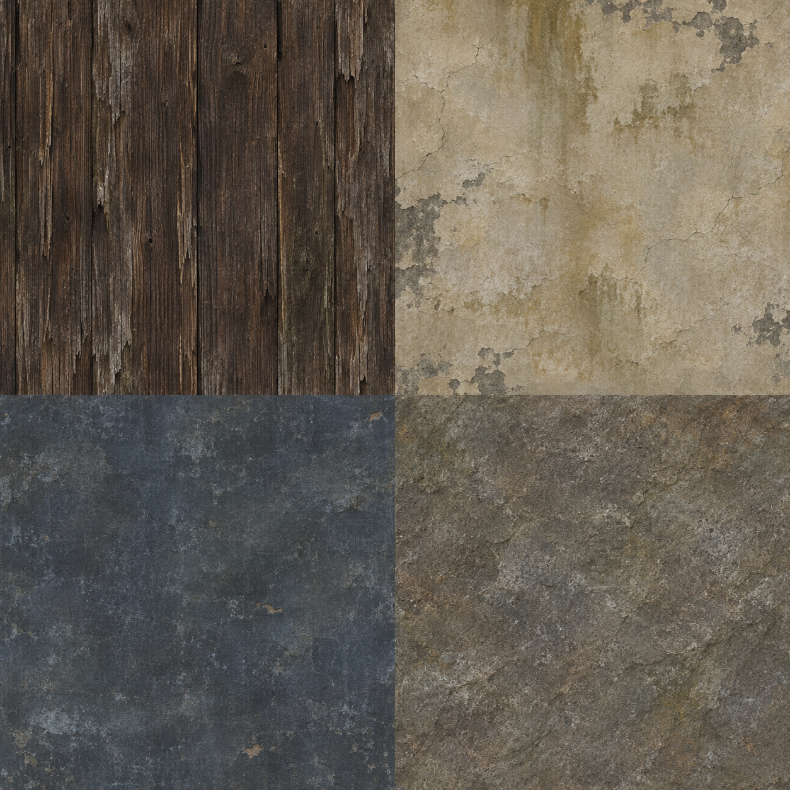
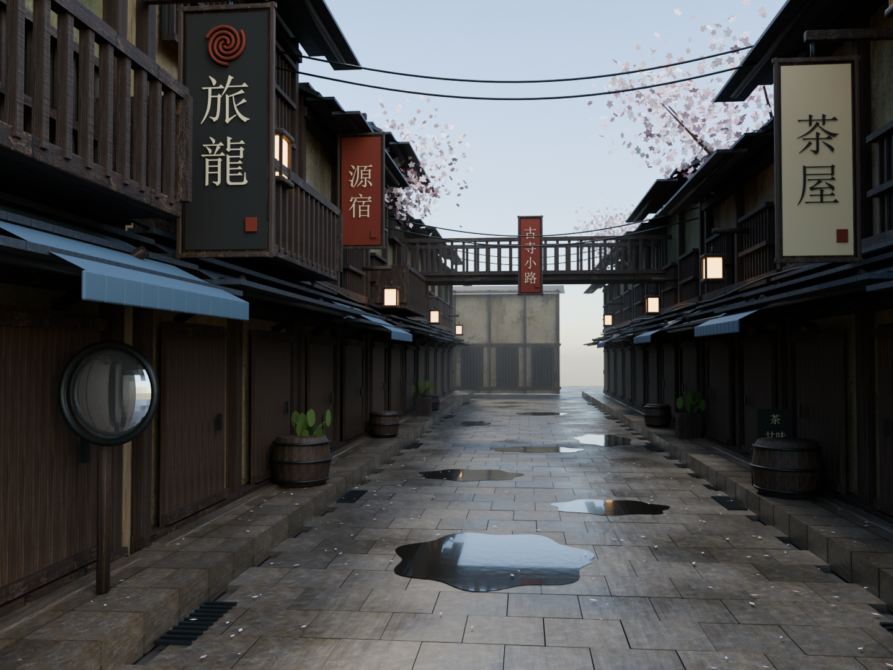
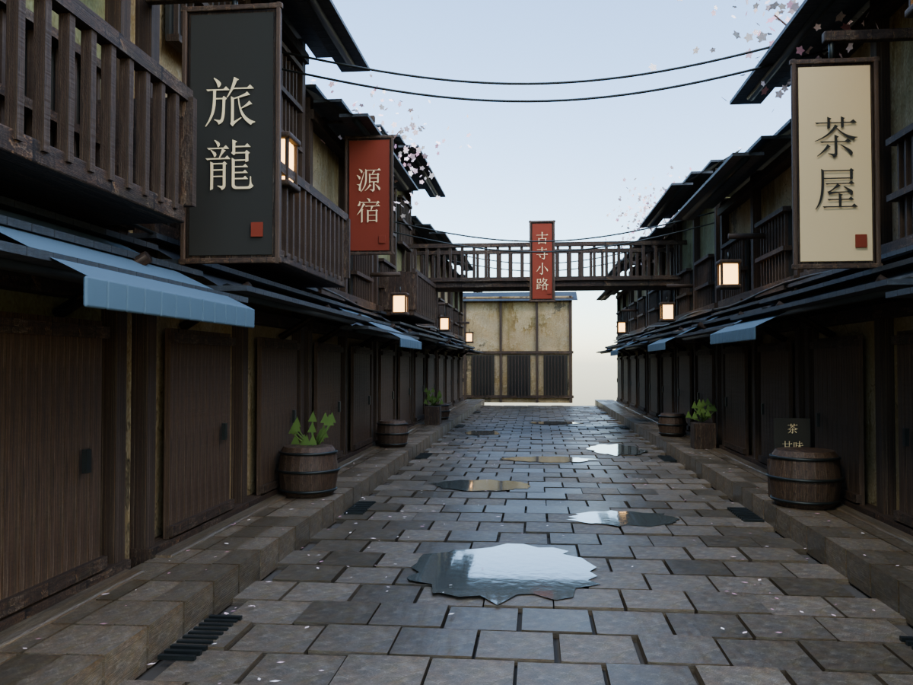
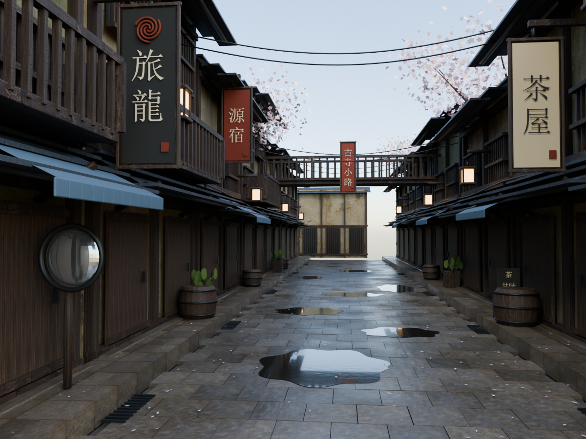

A SINGLE-IMAGE ENVIRONMENT STUDY雨后樱花街：逐阶段建立三维空间
输入是一张氛围参考。布局与尺寸为设计假设，建筑、地面、道具和樱花由 Blender 脚本建立。材质底色使用 AI 生成图集，预览均为实际三维渲染。
各阶段与重开验证已完成，每张图可以点击放大。此项目是单图场景解释与学习原型，未宣称测量精度或参考图相似度百分比。
01 / 观察与假设

先锁定透视、街宽、建筑层级和视觉焦点；积水、阴影与地形分开判断。

俯视布局与高度假设
生成的四象限底色材质图集：旧木 / 灰泥 / 屋面 / 石材分析说明 · 设计参数
参考与实现 · 点击切换

同画幅比较便于发现轮廓、构图与材质差异。本次仍是原型，没有达到原图精细复刻质量。
02 / 透视白模
只检查空间轮廓、建筑高低、桥面和主镜头。白模不能证明最终质感。
03 / 木构近景样板与模块
木梁、门板、上层格栅、阳台和瓦片先形成结构，再沿街扩展。检查近景的轮廓、厚度与连接。
04 / 湿石板、布景与樱花
路面由分块石板构成；两侧路缘有明确高度，浅水面单独建模。招牌、灯笼、木桶和落瓣围绕店铺布置。
初版与修正

第一轮：石板缝偏宽，浅水偏银色，树冠多数被屋顶遮挡。
修正：收紧石板缝，降低金属感，把树冠移入主镜头。多视角检查还发现远端地面缺失与模块透光缝，最终工程中已补齐地面、接缝和坡屋面。
05 / 氛围与最终主镜头
采用天光、柔和日光、暖灯笼与远处薄雾建立层次。所有效果来自保存的三维场景与合成设置。
06 / 八个检查视角
所有角度共用同一份几何。俯视关闭远处薄雾以检查布局；远端和背面为原图未覆盖的设计区域。